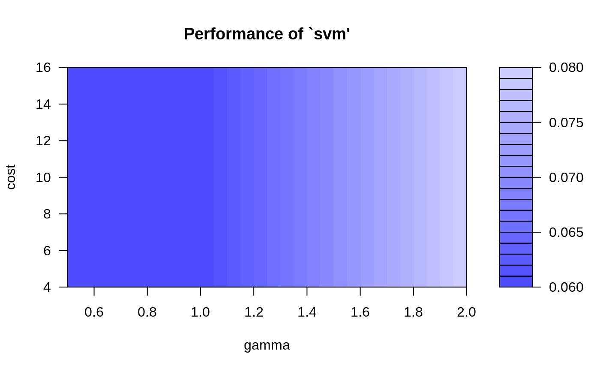

tune.RdThis generic function tunes hyperparameters of statistical methods using a grid search over supplied parameter ranges.
tune(method, train.x, train.y = NULL, data = list(), validation.x = NULL, validation.y = NULL, ranges = NULL, predict.func = predict, tunecontrol = tune.control(), ...) best.tune(...)
| method | either the function to be tuned, or a character string naming such a function. |
|---|---|
| train.x | either a formula or a matrix of predictors. |
| train.y | the response variable if |
| data | data, if a formula interface is used. Ignored, if predictor matrix and response are supplied directly. |
| validation.x | an optional validation set. Depending on whether a
formula interface is used or not, the response can be
included in |
| validation.y | if no formula interface is used, the response of
the (optional) validation set. Only used for bootstrap and fixed validation
set (see |
| ranges | a named list of parameter vectors spanning the sampling
space. The vectors will usually be created by |
| predict.func | optional predict function, if the standard |
| tunecontrol | object of class |
| ... | Further parameters passed to the training functions. |
For tune, an object of class tune, including the components:
a 1 x k data frame, k number of parameters.
best achieved performance.
if requested, a data frame of all parameter combinations along with the corresponding performance results.
list of index vectors used for splits into training and validation sets.
if requested, the model trained on the complete training data using the best parameter combination.
As performance measure, the classification error is used
for classification, and the mean squared error for regression. It is
possible to specify only one parameter combination (i.e., vectors of
length 1) to obtain an error estimation of the specified type
(bootstrap, cross-classification, etc.) on the given data set. For
convenience, there
are several tune.foo() wrappers defined, e.g., for
nnet(), randomForest(),
rpart(), svm(), and knn().
Cross-validation randomizes the data set before building the splits
which---once created---remain constant during the training
process. The splits can be recovered through the train.ind
component of the returned object.
data(iris) ## tune `svm' for classification with RBF-kernel (default in svm), ## using one split for training/validation set obj <- tune(svm, Species~., data = iris, ranges = list(gamma = 2^(-1:1), cost = 2^(2:4)), tunecontrol = tune.control(sampling = "fix") ) ## alternatively: ## obj <- tune.svm(Species~., data = iris, gamma = 2^(-1:1), cost = 2^(2:4)) summary(obj)#> #> Parameter tuning of ‘svm’: #> #> - sampling method: fixed training/validation set #> #> - best parameters: #> gamma cost #> 0.5 4 #> #> - best performance: 0.06 #> #> - Detailed performance results: #> gamma cost error dispersion #> 1 0.5 4 0.06 NA #> 2 1.0 4 0.06 NA #> 3 2.0 4 0.08 NA #> 4 0.5 8 0.06 NA #> 5 1.0 8 0.06 NA #> 6 2.0 8 0.08 NA #> 7 0.5 16 0.06 NA #> 8 1.0 16 0.06 NA #> 9 2.0 16 0.08 NA #>plot(obj)## tune `knn' using a convenience function; this time with the ## conventional interface and bootstrap sampling: x <- iris[,-5] y <- iris[,5] obj2 <- tune.knn(x, y, k = 1:5, tunecontrol = tune.control(sampling = "boot")) summary(obj2)#> #> Parameter tuning of ‘knn.wrapper’: #> #> - sampling method: bootstrapping #> #> - best parameters: #> k #> 5 #> #> - best performance: 0.04579185 #> #> - Detailed performance results: #> k error dispersion #> 1 1 0.04719515 0.02235784 #> 2 2 0.05587686 0.02508103 #> 3 3 0.04914426 0.02546761 #> 4 4 0.05697707 0.02697038 #> 5 5 0.04579185 0.02672776 #>plot(obj2)## tune `rpart' for regression, using 10-fold cross validation (default) data(mtcars) obj3 <- tune.rpart(mpg~., data = mtcars, minsplit = c(5,10,15)) summary(obj3)#> #> Parameter tuning of ‘rpart.wrapper’: #> #> - sampling method: 10-fold cross validation #> #> - best parameters: #> minsplit #> 5 #> #> - best performance: 9.726497 #> #> - Detailed performance results: #> minsplit error dispersion #> 1 5 9.726497 8.039225 #> 2 10 12.292900 9.404842 #> 3 15 16.752786 10.311727 #>plot(obj3)## simple error estimation for lm using 10-fold cross validation tune(lm, mpg~., data = mtcars)#> #> Error estimation of ‘lm’ using 10-fold cross validation: 9.966238 #>